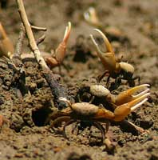
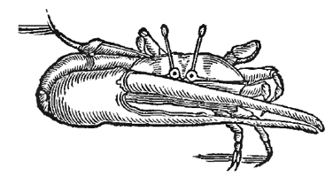
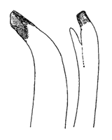
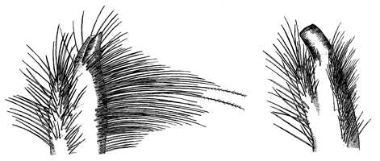

Fiddler Crabs
Uca thayeri
Atlantic Mangrove Fiddler Crab
Type
Information
Photos
Video
Art
References
Species List
Type Description
Uca thayeri
Rathbun, M.J. (1900) Results of the Branner-Agassiz expedition to Brazil. I. The decapod and stomatopod Crustacea.
Proceedings of the Washington Academy of Sciences
2:133–156.
Information
Subgenus
Minuca
Common Names
Atlantic Mangrove Fiddler Crab, Thayer's Fiddler Crab
Synonyms, Alternate Spellings, & Name Forms
Planuca thayeri
,
Uca (Boboruca) thayeri thayeri
,
Uca (Minuca) thayeri
,
Uca (Minuca) thayeri thayeri
,
Uca thayeri
Geographic Range
Western Atlantic: USA (Florida); Caribbean & West Indies; Mexico (Yucatan Peninsula) to Brazil
Download SVG line map of ranges.
Map data derived from:
Abele & Kim (1986)
;
Barnwell & Thurman (1984)
;
Barnwell (1986)
;
Crane (1975)
;
Powers (1977)
;
Thurman (1987)
;
Thurman (1987)
;
Thurman
et al.
(2013)
External Links
Encyclopedia of Life
Wikipedia
iNaturalist
NCBI Taxonomy Browser/Genbank
GBIF
Photos

Video
No videos available at this time.
Art



References
Altevogt, R. (1969) Ein sexualethologischer Isolationsmechanismus bei sympatrischen
Uca
-Arten (Ocypodidae) des Ostpazifik.
forma et functio
1:238–249. {An ethological reproductive isolation mechanism in sympatric species of
Uca
(Ocypodidae) of the Eastern Pacific}
Barnwell, F.H. (1963) Observations on daily and tidal rhythms in some fiddler crabs from Equatorial Brazil.
Biological Bulletin
125(3):399–415.
Beinlich, B., and H.-O. von Hagen (2006) Materials for a more stable subdivision of the genus
Uca
Leach.
Zoologische Mededelingen
80(4):9–32.
Bosc, L.A.G. (1802)
Histoire naturelle des crustacés, contenant leur description et leurs moeurs; avec figures dessinées d'après nature
, Volume 1. Paris: Deterville.
Bosc, L.A.G. (1830)
Manuel de l'histoire naturelle des crustacés, contenant leur description et leurs moeurs; avec figures dessinées d'après nature
, Volume 1. Paris: Deterville.
Bott, R. (1954) Dekapoden (Crustacea) aus El Salvador. 1. Winkerkrabben (
Uca
).
Senckenbergiana biologica
35(3–4):155–180.
Bott, R. (1973) Die verwandtschaftlichen Beziehungen der
Uca
-Arten (Decapoda: Ocypodidae).
Senckenbergiana biologica
54(4–6):315–325.
Chace, F.A., Jr., and H.H. Hobbs, Jr. (1969) The freshwater and terrestrial decapod crustaceans of the West Indies with special referece to Dominica.
United States National Museum Bulletin
292:1–258.
Christopher, C.E., and M. Salmon (2005) Do fiddler crab larvae show phenotypic plasticity?
Integrative and Comparative Biology
45(6):1118.
Coelho, P.A. (1967) Os crustáceos decápodos de alguns manguezais pernambucanos.
Trabalhos do Instituto Oceanográficos da Universidade Federal de Pernambuco
7/8:71–90.
Coelho, P.A., and M.d.A. Ramos (1972) A constituiçāo e a distribuiçāo da fauna de decápodos do litoral leste da América do Sul entre en latitudes de 5° N e 39° S.
Trabalhos Oceanográficos da Universidade Federal de Pernambuco
13:133–236.
Crane, J. (1941) Eastern Pacific Expeditions of the New York Zoological Society. XXVI. Crabs of the genus
Uca
from the west coast of Central America.
Zoologica NY
26:145–208.
Crane, J. (1957) Basic patterns of display in fiddler crabs (Ocypodidae, Genus
Uca
).
Zoologica NY
42:69–82.
Crane, J. (1958) Aspects of social behavior in fiddler crabs, with special reference to
Uca maracoani
(Latreille).
Zoologica NY
43:113–130.
Crane, J. (1966) Combat, display and ritualization in fiddler crabs (Ocypodidae, genus
Uca
).
Philosophical Transactions of the Royal Society of London. Series B, Biological Sciences
251:459–472.
Crane, J. (1975)
Fiddler Crabs of the World: Ocypodidae: Genus Uca
. Princeton, NJ: Princeton University Press.
De Geer, C. (1778) Des Crabes. Pp. 409–432 in
Memoires pour servir a l'histoire des insectes
, Volume 7. Stockholm: Pierre Hesselberg.
Feest, J. (1969) Morphophysiologische Untersuchungen zur Ontogenese und Fortpflanzungsbiologie von
Uca annulipes
und
Uca triangularis
mit Vergleichsbefunden an
Ilyoplax gangetica
.
forma et functio
1:159–225.
Gerlach, S.A. (1958) Die Mangroveregion tropischer Küsten als Lebensraum.
Zeitschrift für Morphologie und Ökologie der Tiere
46(6):636–730.
Greenspan, B.N. (1975) Male reproductive strategy in the communal courtship system of the fiddler crab,
Uca rapax
. Pp. 196: Rockefeller University).
Gronovius, J.F. (1764)
Zoophylacii Gronoviani Fasciulus Secondus exhibens Enumerationem Insectorum, quae in Museo suo adservat, examini subjecit, systematice disposuit atque descripsit
: Lugduni Batavorum.
Hartnoll, R.G. (1988) Growth and molting. Pp. 186–210 in
Biology of the Land Crabs
, W.W. Burggren and B.R. McMahon, eds. Cambridge: Cambridge University Press.
Herbst, J.F.W. (1782)
Versuch einer Naturgeschichte der Krabben und Krebse. Nebst einer systematischen Beschreibung ihrer verschiedenen Arten
, Volume 1, no. 1. Zurich: J. C. Fuessly.
Herrnkind, W.F. (1983) Movement patterns and orientation. Pp. 41–105 in
The Biology of Crustacea, Volume 7: Behavior and Ecology
, F.J. Vernberg and W.B. Vernberg, eds., Volume 7. New York: Academic Press.
Holthuis, L.B. (1959) The crustacea Decapoda of Suriname (Dutch Guiana).
Zoologische Verhandelingen
44(2):1–296.
Jonston, J. (1650)
Historiæ Naturalis de Exanguibus Aquaticis
, Volume 4.
Lamarck, J.B.P.A.d. (1838)
Histoire Naturelle des Animaux sans Vertèbres
. Tenth edition Edition, Volume V. Paris: J. B. Baillière.
Landstorfer, R.B., and C.D. Schubart (2010) A phylogeny of Pacific fiddler crabs of the subgenus
Minuca
(Crustacea, Brachyura, Ocypodidae:
Uca
) with the description of a new species from a tropical gulf in Pacific Costa Rica.
Journal of Zoological Systematics and Evolutionary Research
48(3):214–218.
Latreille, P.A. (1828) Les Crustaces, les Arachnides et les Insectes. Pp. in
Le Règne Animal Distribué d'après son organisation, pour servir de base a l'histoire naturelle des animaux et d'introduction a l'anatomie comparée (2nd edition)
, G. Cuvier, ed., Volume 4. Paris: Deterville.
Latreille, P.A. (1829)
Les Crustcacès, les Arachnides et les Insectes, distribues en Familles Naturelles
, Volume 1. Paris: Deterville.
Lemos de Castro, A. (1962) Sôbre os crustáceos referidos por Marcgrave em sua "História Naturalis Brasiliae" (1648).
Archivos do Museu Nacional do Rio de Janeiro
52:37–51.
Marcgrave, G. (1648) Historiæ Rerum Naturalium Brasiliæ. Pp. 1–293 in
Historia Naturalis Brasiliae
. Leyden and Amsterdam: Lugdun Batavorum et Amstelodami.
McFadden, A., and C.L. Thurman, II (2003) Osmoregulation by fiddler crabs (genus
Uca
) from California and South Florida.
Integrative and Comparative Biology
43(6):1044.
Miller, D.C., and F.J. Vernberg (1967) Some thermal requirements of temperate and tropical zone fiddler crabs influencing geographic distribution.
American Zoologist
7(4):766.
Miller, D.C., and F.J. Vernberg (1968) Some thermal requirements of fiddler crabs of the temperate and tropical zones and their influence on geographic distribution.
American Zoologist
8(3):459–469.
Milne Edwards, H. (1837)
Historie naturelle des crustaces comprenant l-anatomie, la physiologie et las classification des ces animaux
, Volume 2. Paris.
Milne Edwards, H. (1837) Les Crustaces. Pp. 278 in
Le Regne animal distribue d'apres son organisation
, G. Cuvier, ed., Volume XVII. Paris
Oliveira, L.P.H.d. (1939) Contribuição ao conhecimento dos crustaceos do Rio de Janeiro. Genero
Uca
(Decapoda: Ocypodidae).
Memórias do Instituto Oswaldo Cruz
34(1):115–148.
Powers, L.W. (1975) The Fiddler Crab Burrow: A Study in Behavioral Ecology. Pp. 213 (Austin, Texas: University of Texas at Austin).
Powers, L.W. (1977) A catalogue and bibliography to the crabs (Brachyura) of the Gulf of Mexico.
Contributions in Marine Science
20(Supplement):1–190.
Powers, L.W., and J.F. Cole (1976) Temperature variation in fiddler crab microhabitats.
Journal of Experimental Marine Biology and Ecology
21(2):141–157.
Rathbun, M.J. (1900) Results of the Branner-Agassiz expedition to Brazil. I. The decapod and stomatopod Crustacea.
Proceedings of the Washington Academy of Sciences
2:133–156.
Rathbun, M.J. (1902) The Brachyura and Macrura of Porto Rico.
Bulletin of the United States Fish Commission
20(2):1–127.
Rathbun, M.J. (1918) The grapsoid crabs of America.
United States National Museum Bulletin
97:1–461.
Rathbun, M.J. (1933) Brachyuran crabs of Porto Rico and the Virgin Islands.
Scientific Survey of Porto Rico and the Virgin Islands
15(1):1–121.
Rodriguez, G. (1993) From Oviedo to Rathbun: The development of brachyuran crab taxonomy in the neotropics (1535–1937). Pp. 41–73 in
Crustacean Issues 8: History of Carcinology
, F. Truesdale, ed. Rotterdam: Balkema.
Sachs, P.J. (1665)
Gammarologia curiosa
.
Salmon, M. (1966) Courtship behavior and distribution of fiddler crabs in Florida (Motion Picture).
American Zoologist
6(4):515.
Salmon, M. (1967) Coastal distribution, display and sound production by Florida fiddler crabs (genus
Uca
).
Animal Behaviour
15(4):449–459.
Salmon, M., and S.P. Atsaides (1968) Visual and acoustical signalling during courtship by fiddler crabs (genus
Uca
).
American Zoologist
8(3):623–639.
Salmon, M., and K.W. Horch (1972) Acoustic signalling and detection by semiterrestrial crabs of the family Ocypodidae. Pp. 60–96 in
Behavior of Marine Animals Volume 1: Invertebrates
, H.E. Winn and B.L. Olla, eds., Volume 1. New York: Plenum Press.
Salmon, M., and G.W. Hyatt (1983) Communication. Pp. 1–40 in
The Biology of Crustacea, Volume 7: Behavior and Ecology
, F.J. Vernberg and W.B. Vernberg, eds., Volume 7. New York: Academic Press.
Salmon, M., and N. Zucker (1988) Interpreting differences in the reproductive behaviour of fiddler crabs (genus
Uca
). Pp. 387–407 in
Behavioral Adaptation to Intertidal Life
, G. Chelazzi and M. Vannini, eds. New York: Plenum Press.
Tabb, D.C., and R.B. Manning (1961) A checlist of the flora and fauna of northern Florida Bay and adjacent brackish water of the Florida mainland collected during the period July, 1957 through September, 1960.
Bulletin of Marine Science
11(4):552–649.
Tashian, R.E., and F.J. Vernberg (1958) The specific distinctness of the fiddler crabs
Uca pugnax
(Smith) and
Uca rapax
(Smith) at their time of overlap in northeastern Florida.
Zoologica NY
43:89–92.
Tavares, M.S. (1993) Toward the history of pre-Linnean carcinology in Brazil. Pp. 7–29 in
Crustacean Issues 8: History of Carcinology
, F. Truesdale, ed. Rotterdam: Balkema.
Thurman, C.L., II (2004) Osmoregulation in fiddler crabs: A review.
Integrative and Comparative Biology
44(6):652.
Vélez, M.J., Jr. (1967) Checklist of the terrestrial and freshwater Decapoda of Puerto Rico.
Caribbean Journal of Science
7(1–2):41–44.
Vernberg, F.J. (1969) Acclimation of intertidal crabs.
American Zoologist
9(2):333–341.
Vernberg, F.J., and J.D. Costlow, Jr. (1966) Studies on the physiological variation between tropical and temperate-zone fiddler crabs of the genus
Uca
. IV. Oxygen consumption of larvae and young crabs reared in the laboratory.
Physiological Zoology
39(1):36–52.
Vernberg, F.J., and W.B. Vernberg (1964) Metabolic adaptation of animals from different latitudes.
Helgoländer wissenschaftliche Meeresuntersuchungen
9(1):476–487.
Vernberg, F.J., and W.B. Vernberg (1967) Thermal lethal limits of southern hemisphere
Uca
crabs. Studies on the physiological variation between tropical and temperate zone fiddler crabs of the genus
Uca
. IX.
Oikos
18(1):118–123.
Vernberg, F.J., and W.B. Vernberg (1970)
The Animal and the Environment
: Holt, Rinehard and Winston.
Vernberg, F.J., and W.B. Vernberg (1975) Adaptations to extreme environments. Pp. 165–180 in
Physiological Ecology of Estuarine Organisms
, F.J. Vernberg, ed. Columbia, SC: University of South Carolina Press.
von Hagen, H.-O. (1962) Freilandstudien zur Sexual- und Fortpflanzungsbiologie von
Uca tangeri
in Andalusien.
Zeitschrift für Morphologie und Ökologie der Tiere
51(6):611–725.
von Hagen, H.-O. (1967) Klopfsignale auch bei Grapsiden (Decapoda Brachyura).
Naturwissenschaften
54(7):177–178.
von Hagen, H.-O. (1968) Studien an peruanischen Winkerkrabben (
Uca
).
Zoologische Jahrbücher. Abteilung für Systematik, Ökologie und Geographie der Tiere
95(2):395–468. {Studies of Peruvian fiddler-crabs (
Uca
)}
von Hagen, H.-O. (1970) Anpassungen an das spezielle Gezeitenzonen-Niveau bei Ocypodiden (Decapoda, Brachyura).
forma et functio
2:361–413. {Adaptations to the special intertidal level of habitat in Ocypodid crabs (Decapoda, Brachyura)}
von Hagen, H.-O. (1970) Die Balz von
Uca vocator
(Herbst) als ökologisches Problem.
forma et functio
2:238–253. {Relations of courtship behaviour and habitat in
Uca vocator
(Herbst)}
von Hagen, H.-O. (1970) Verwandtschaftliche Gruppierung und Verbreitung der Karibischen Winkerkrabben (Ocypodidae, Gattung
Uca
).
Zoologische Mededelingen
44(15):217–235.
von Hagen, H.-O. (1970) Zur Deutung langstielger und gehörnter Augen bei Ocypodiden (Decapoda, Brachyura).
forma et functio
2:13–57. {On the significance of elongated and horned eyes in Ocypodid crabs}
von Hagen, H.-O. (1975) Klassifikation und phylogenetische Einordnung der Lautäußerungen von Ocypodiden und Grapsiden (Crustacea, Brachyura).
Zeitschrift fur zoologische Systematik und Evolutionsforschung
13(4):300–316. {Classification and evolution of sound production in Ocypodid and Grapsid crabs (Crustacea, Brachyura)}
von Hagen, H.-O. (1987) Morphologie und Winkbalz einer neuen
Uca
-Art (Crustacea, Brachyura) aus dem Staat Espirito Santo (Brasilien).
Mitteilungen aus dem hamburgischen zoologischen Museum und Institut
84:81–94. {Morphology and waving display of a new species of
Uca
(Crustacea, Brachyura) from the state of Espirito Santo (Brazil)}
von Martens, E. (1869) Sudbrasilische Süss-und Brackwasser-Crustaceen nach den Sammlungen des Dr. Reinh. Henesel.
Archiv für Naturgeschicthe
35(1):1–37.
Warner, G.F. (1969) The occurrence and distribution of crabs in a Jamaican mangrove swamp.
Journal of Animal Ecology
38(2):379–389.
Weis, J.S. (1977) Limb regneration in fiddler crabs: Species differences and effects of methylmercury.
Biological Bulletin
152(2):263–274.
Weygoldt, P. (1977) Communication in crustaceans and arachnids. Pp. 303–333 in
How Animals Communicate
, T.A. Sebeok, ed. Bloomington, Indiana: Indiana University Press.
{kind=link}